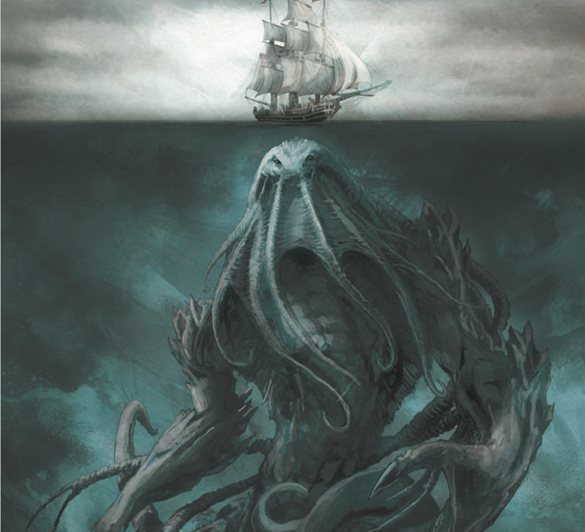
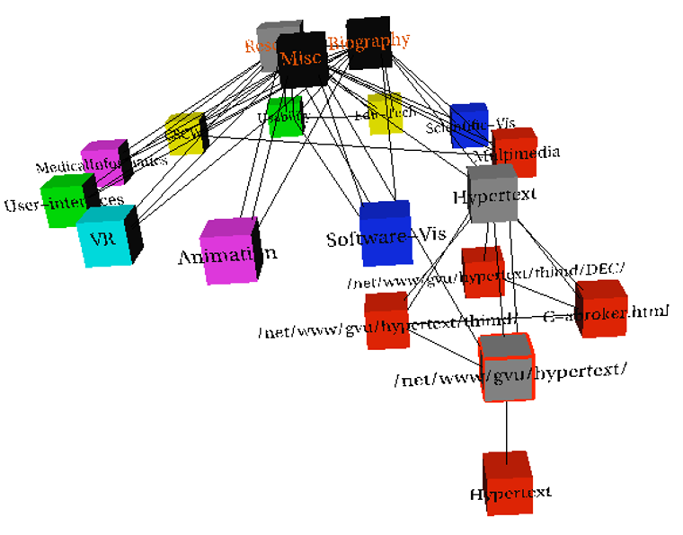

TLDR VERSION
These are guidelines and considerations, not really absolute rules:
- When to use 3D? when to use 2D?
- When to use eyes instead of memory?
- When does immersion help?
- When to use overviews?
- How long is too long?
- Which comes first, form or function?
UNJUSTIFIED USE OF 3D
Common in news and some infographics.

DEPTH VS PLANAR POSITION
Position channels are very powerful… when they are PLANAR SPATIAL POSITION, not depth!

THE DANGERS OF DEPTH

THE ACTUAL DANGERS OF DEPTH
We don’t really live in 3D: we see in 2.05D.
- We acquire more info on an image plane quickly using eye movements
- We acquire more info for depth much more slowly using head/body motion

OCCLUSION
“Occlusion occurs when one 3D graphic partially blocks another. It is the result of mimicking space in the natural world–where objects have differing X, Y, and Z coordinates. In data visualization, occlusion obscures important data and creates false hierarchies wherein unobstructed graphics appear most important.” … From This BLOG post by M. Bowers.
Interaction can resolve occlusion, but at cost of time and cognitive load.
PERSPECTIVE DISTORTION
Perspective in 3D visualizations interferes with all size channel encodings. The power of 2D planar positioning is lost!
“Distortion occurs when 3D graphics recede into or project out from the picture plane through foreshortening. In drawing, foreshortening makes objects seem as though they inhabit three-dimensional space, but in data visualization, it creates more false hierarchies. Foreground graphics appear larger, background graphics smaller, and the relationship between data series is needlessly skewed.”…… From This BLOG post by M. Bowers.

3D BAR CHARTS - Probably not…
3D bars are very difficult to justify!
Perspective distortion and occlusion make faceting into 2D the better choice in most situations.

TILTED TEXT
Skewed perspective in 3D visualizations does not interact well with fonts.

Exploring and Reducing the Effects of Orientation on Text Readability in Volumetric Displays.Grossman et al. CHI 2007
EXAMPLE: 3D EXTRUDED TIME SERIES
What information can we decode from this visualization?

Cluster and Calendar based Visualization of Time Series Data. van Wijk and van Selow, Proc. InfoVis 99.
PLANAR ALTERNATIVE
This version of the extruded time series visualization uses derived data by computing a cluster hierarchy of power usage patterns. It then juxtaposes multiple views: a calendar and superimposed 2D curves differentiated with a color channel.
3D: SHAPE PERCEPTION
The benefits of 3D visualization outweigh its costs when the task is shape perception for 3D spatial data. Interactive navigation often supports synthesis across many viewpoints.

Image-Based Streamline Generation and Rendering. Li and Shen. IEEE Trans. Visualization and Computer Graphics (TVCG) 13:3 (2007), 630–640.
3D: CONSTRAINED NAVIGATION

3D SUMMARY
- 3D legitimate for true 3D spatial data.
- 3D needs very careful justification for abstract data
- The benefits outweigh costs when topological structure/context important for the task.
EYES BEAT MEMORY
External Cognition vs. Internal Memory
It is easy to compare by moving eyes between side-by-side views.
It is much more difficult to compare a visible item to your memory of what you saw.
- Implications for animation:
- great for choreographed storytelling
- great for transitions between two states
- poor for many states with changes everywhere
- consider small multiples instead
RESOLUTION BEATS IMMERSION
Immersion is typically not helpful for abstract data because we do not need a sense of presence or stereoscopic 3D. A desktop view is also usually better for workflow integration.
Resolution in VR is a critical constraint, as pixels are the scarcest resource.
First wave: virtual reality for abstract data! This is difficult to justify.
Second wave: AR/MR (augmented/mixed reality) has more promise.
OVERVIEW
“Overview first, zoom and filter, details on demand”
The Eyes Have It: A Task by Data Type Taxonomy for Information Visualizations. Shneiderman. Proc. IEEE Visual Languages, pp. 336–343, 1996.

This seems simple enough, until you realize that “Overview” is really a microcosm of the full vis design problem space.
RESPONSIVENESS
Responsiveness (visual feedback to the user) has 3 rough categories:
- 0.1 seconds: perceptual processing
- subsecond response for mouseover highlighting
- 1 second: immediate response
- fast response after mouseclick, button press
- Fitts’ Law limits on motor control
- 10 seconds: brief tasks
- bounded response after dialog box
- mental model of heavyweight operation (file load)
- Show hourglass for multi-second operations (check for cancel/undo)
- Show progress bar for long operations (process in background thread)
- Consider rendering speed when item count is large (guaranteed frame rate)
FUNCTION, THEN FORM
It is dangerous to start with aesthetics because it is usually impossible to add function retroactively.
Start with focus on functionality because you can improve and refine aesthetics later.
Aesthetics do matter! They are another level of function. Consider working with a graphic designer on important visualizations.
FORM: BASIC GRAPHIC DESIGN
Proximity:
DO group related items together
AVOID equal whitespace between unrelated items
Alignment:
DO find/make a strong line and stick to it
AVOID automatic centering
Repetition:
DO unify by pushing existing consistencies
Contrast:
If not identical, then very different
AVOID not quite the same
The Non-Designer’s Design Book, 4th ed. Robin Williams, Peachpit Press, 2015. fast read, very practical to work through whole thing
LABELLING
Make visualizations as self-documenting as possible!
Meaningful & useful title, labels, legends.
Axes and panes/subwindows should have labels and axes should have good mix/max boundary tick marks.
Everything that’s plotted should have a legend and its own header/labels if not redundant with main title.
Use reasonable numerical format and avoid scientific notation in most cases.
https://xkcd.com/833/
SUMMARY - RULES OF THUMB
- No unjustified 3D
- Power of the plane
- Disparity of depth
- Occlusion hides information
- Perspective distortion dangers
- Tilted text isn’t legible
- Eyes beat memory
- Resolution over immersion
- Overview first, zoom and filter, details on demand
- Responsiveness is required
- Function first, form next